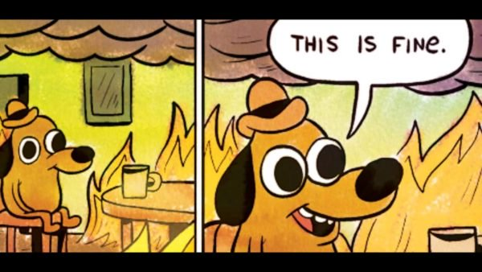
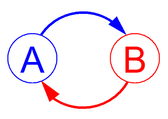
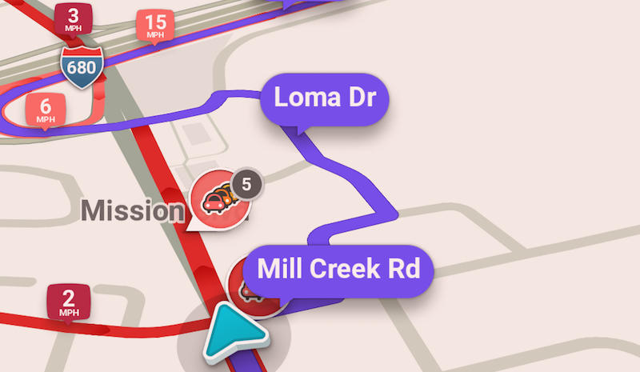
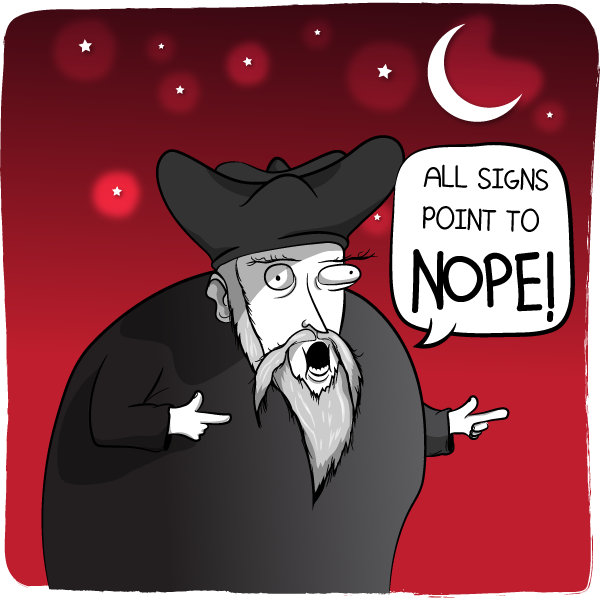
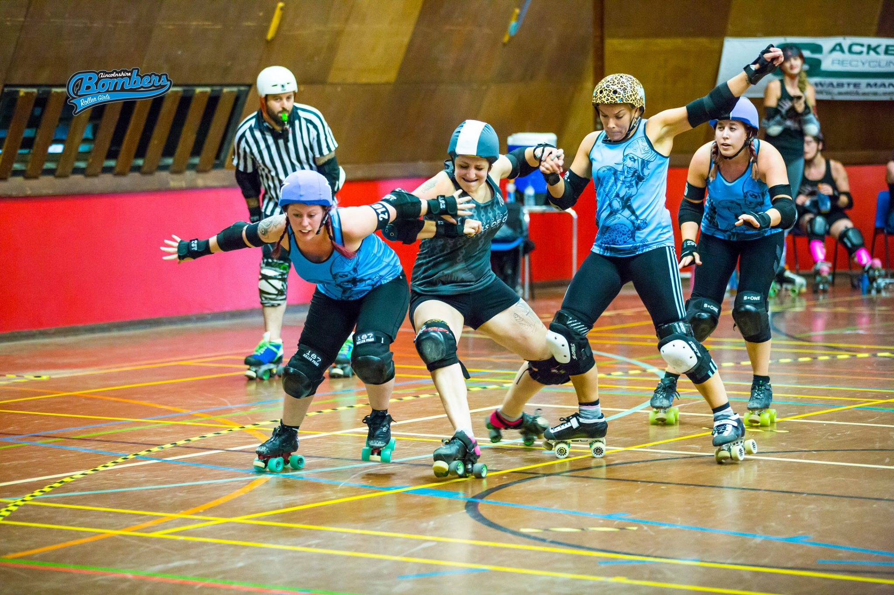

Stress and BurnoutWorld Mental Health Day
10 October
World Mental Health Day
10 October
Stress in CABI
Things I've learned
(as a manager)
If you are a manager in a team that has a stress problem...
almost certainly...
YOU have a stress problem
Work-related stress: risk areas

http://www.hse.gov.uk/stress
Work demands
- Workload Deadlines
- Competing priorities
- Communication with others
- Culture of the working environment
Relationships
- Areas of potential conflict within team
- Effectiveness of communication within team
- Knowledge of resources available to support individuals
Role
- Availability of job descriptions
- Effectiveness of objective setting
- Level of communication within the team
- Level of direction from management
Support
- Level of support and communication from management
- Skills of management to address stress
- Knowledge of resources available to support individuals
Control
- Ability to control deadlines / workload
- Level of autonomy and decision-making
- Level of direction from management
- Availability of resources
Change
- Understanding of the need for change
- Level of communication within team
- Understanding of the future strategy / vision
Things I've learned
(as a stressed employee)
A sense of powerlessness causes a major reinforcing feedback loop
Doing something (anything) about it is helpful for me, whether it works or not.
(you might be different)
Build your support voltron

https://larahogan.me/blog/manager-voltron/
https://twitter.com/b0rk/
Say no where you can
(Get your manager to help by setting priorities clearly)

My current fave: saying no to unnecessary travel

Declined trips, August - November 2018
Coping mechanisms
Some things that help me:
- Roller derby
- Yoga
- Making things
- Reading books
- Music
- Gin
- Going for a walk
- Learning something new
- Getting something (anything) under control
- Podcasts
Where you put your attention grows
attention is one of our most valuable resources.
in your own life, attention is what determines the quality of your lived experience. if your attention stays on what’s wrong, on your powerlessness and pain, you can become identified with a victimized, power under narrative, and that will grow.
if your attention is instead on gratitude, collective power, experimentation, curiosity and celebration, these things will grow in your life.
-adrienne maree brown
More resources
- https://www.prospect.org.uk/stress
- https://healthassuredeap.co.uk (CABI EAP)
- http://burnout.io
- http://bit.ly/ManagerVoltronBingo
- http://hse.gov.uk/stress/
(These slides: https://brie999au.github.io/burnout/)